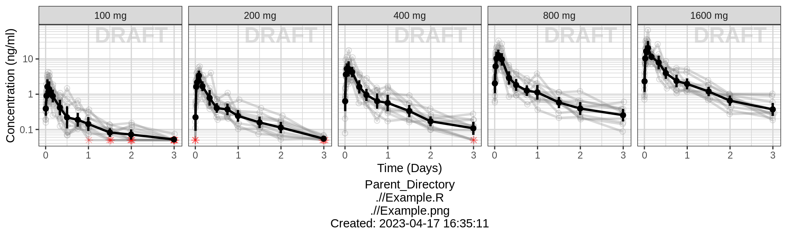
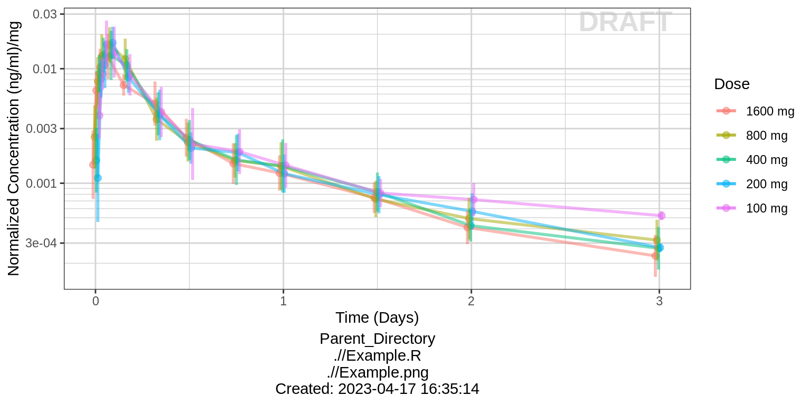
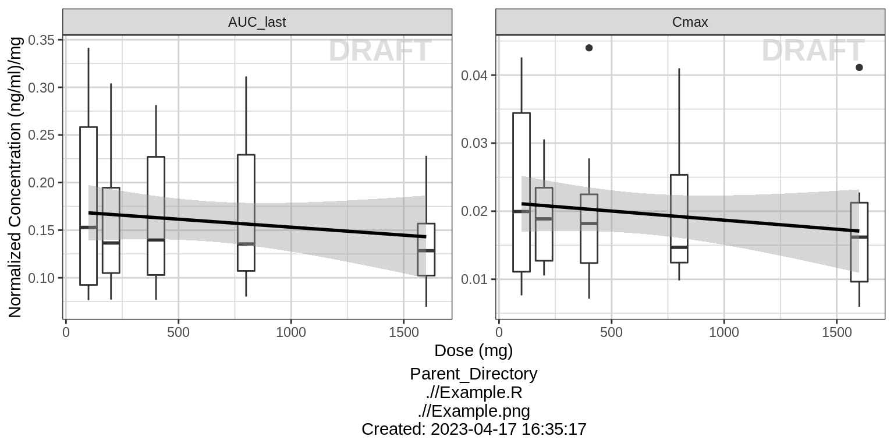
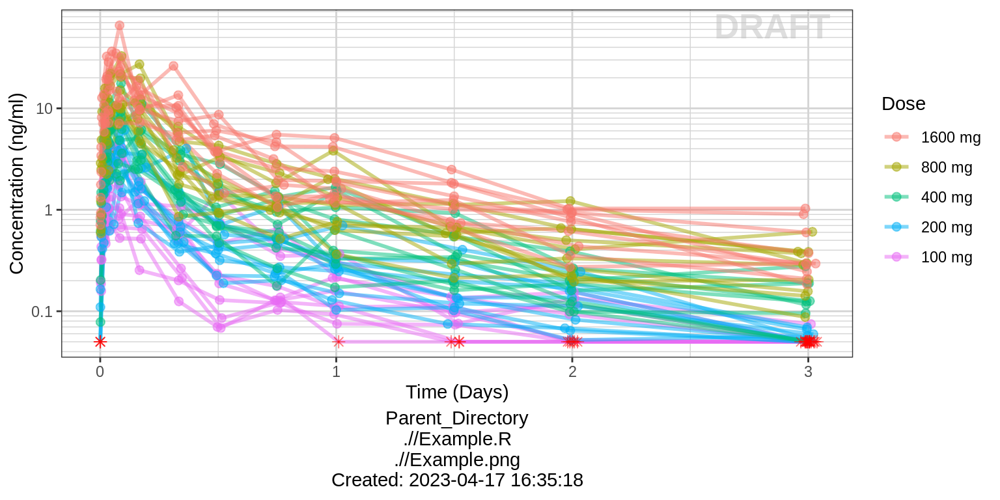
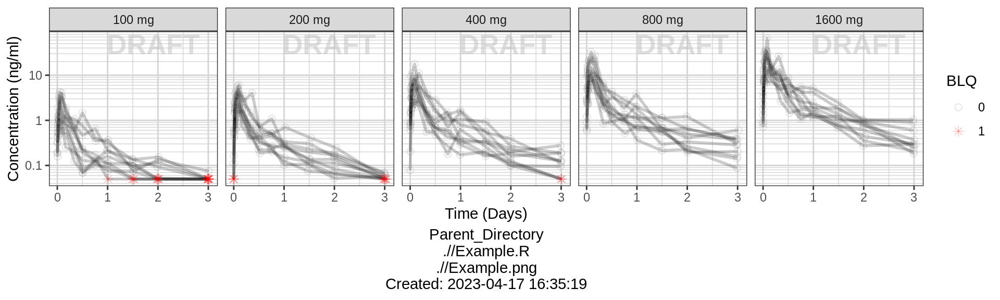
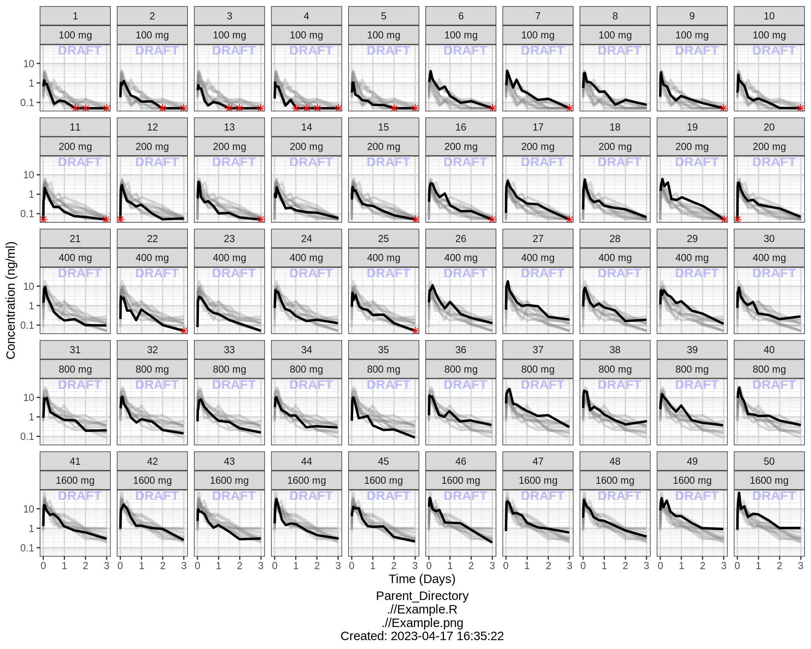
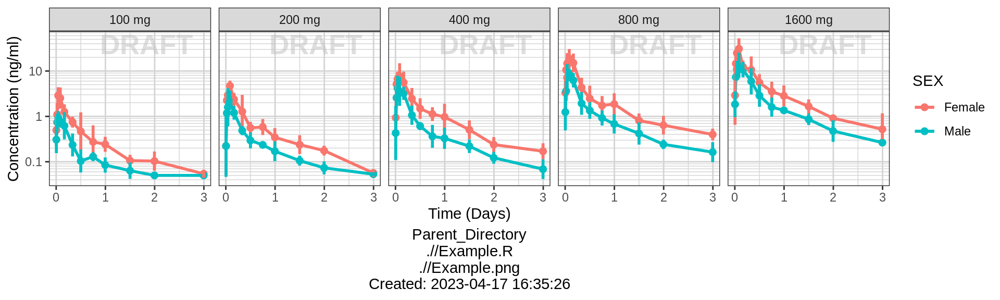
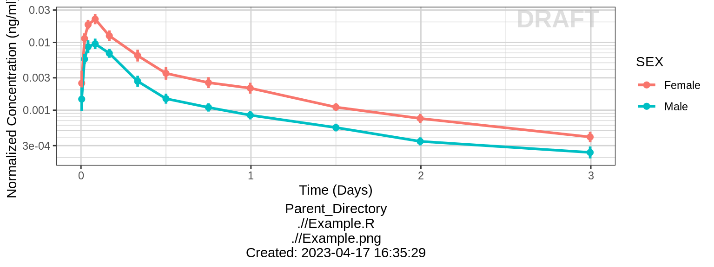
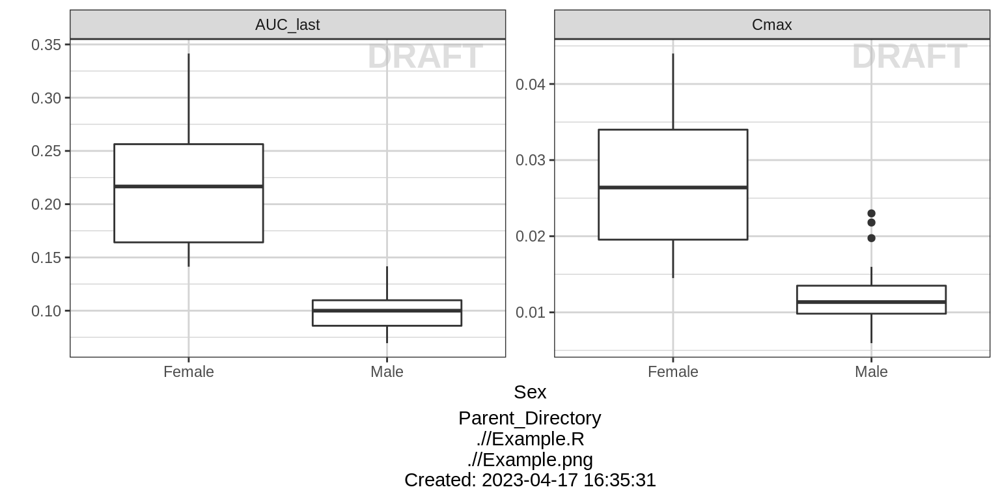
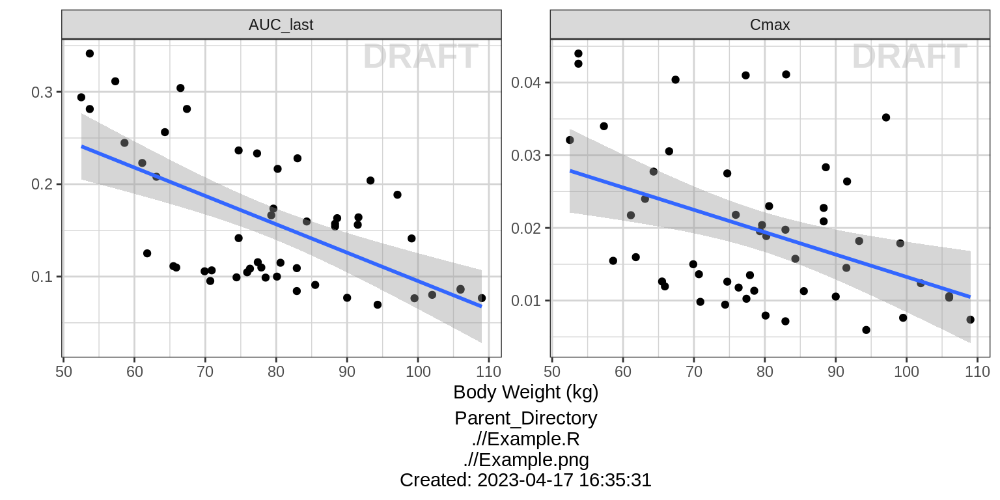

PK - Single Ascending Dose
Overview
This document contains exploratory plots for single ascending dose PK data as well as the R code that generates these graphs. The plots presented here are based on simulated data (see: PKPD Datasets). You may also download the Single Ascending Dose PK dataset for your reference (download dataset). Data specifications can be accessed on Datasets and Rmarkdown template to generate this page can be found on Rmarkdown-Template.
Setup
# remove reference to home directory in libPaths
.libPaths(grep("home", .libPaths(), value=TRUE, invert=TRUE))
.libPaths(grep("usr", .libPaths(), value=TRUE, invert=TRUE))
# add localLib to libPaths for locally installed packages
.libPaths(c("localLib", .libPaths()))
# will load from first filepath first, then look in .libPaths for more packages not in first path
# version matches package in first filepath, in the case of multiple instances of a package
# library(rmarkdown)
library(gridExtra)
library(grid)
library(ggplot2)
library(dplyr)
library(RxODE)
library(caTools)
#flag for labeling figures as draft
draft.flag = TRUE
## ggplot settings
theme_set(theme_bw(base_size=12))Define Useful Graphics Functions
# annotation of plots with status of code
AnnotateStatus <- function(draft.flag, log.y=FALSE, log.x=FALSE, fontsize=7, color="grey") {
x.pos <- -Inf
if (log.x)
x.pos <- 0
y.pos <- -Inf
if (log.y)
y.pos <- 0
if(draft.flag) {
annotateStatus <- annotate("text",
label="DRAFT",
x=x.pos, y=y.pos,
hjust=-0.1, vjust=-1.0,
cex=fontsize,
col=color, alpha=0.7, fontface="bold")
} else {
annotateStatus <- NULL
}
return(annotateStatus)
}Load Dataset
my.data <- read.csv("../Data/Single_Ascending_Dose_Dataset2.csv")
# Define order for factors
my.data$TRTACT <- factor(my.data$TRTACT, levels = unique(my.data$TRTACT[order(my.data$DOSE)]))Provide an overview of the data
Summarize the data in a way that is easy to visualize the general trend of PK over time and between doses. Using summary statistics can be helpful, e.g. Mean +/- SE, or median, 5th & 95th percentiles. Consider either coloring by dose or faceting by dose. Depending on the amount of data one graph may be better than the other.
When looking at summaries of PK over time, there are several things to observe. Note the number of doses and number of time points or sampling schedule. Observe the overall shape of the average profiles. What is the average Cmax per dose? Tmax? Does the elimination phase appear to be parallel across the different doses? Is there separation between the profiles for different doses? Can you make a visual estimate of the number of compartments that would be needed in a PK model?
Concentration over time, colored by Dose, mean +/- 95% CI
data_to_plot <- my.data[my.data$CMT==2,]
data_to_plot$TRTACT <- factor(data_to_plot$TRTACT, levels = rev(levels(data_to_plot$TRTACT)))
gg <- ggplot(data = data_to_plot, aes(x = NOMTIME, y = LIDV, group= DOSE, color = TRTACT))
gg <- gg + theme_bw(base_size = 12)
gg <- gg + stat_summary(geom = "errorbar", width = 0.5, size = 1,
fun.data = function(y){
y <- stats::na.omit(y)
data.frame(
y = mean(y),
ymin = mean(y)-qt(0.975,length(y))*sqrt(stats::var(y)/length(y)),
ymax = mean(y)+qt(0.975,length(y))*sqrt(stats::var(y)/length(y)))
}) +
stat_summary(geom = "point", size = 2, fun.y = mean) +
stat_summary(geom = "line", size = 1, fun.y = mean)
gg <- gg + scale_y_log10() + annotation_logticks(base = 10, sides = "l", color = rgb(0.5,0.5,0.5))
gg <- gg + scale_x_continuous(breaks = seq(0,96,6))
gg <- gg + xlab("Time (hours)") + ylab("Concentration (ng/mL)")
gg <- gg + guides(color= guide_legend(title="Dose"))
gg + AnnotateStatus(draft.flag, log.y=TRUE)
Concentration over time, faceted by Dose, mean +/- 95% CI, overlaid on gray spaghetti plots
data_to_plot <- my.data[my.data$CMT==2,]
gg <- ggplot(data = data_to_plot, aes(x = TIME, y = LIDV)) + theme_bw(base_size = 12)
gg <- gg + geom_line(aes(group = ID), color = rgb(0.5,0.5,0.5), size = 1, alpha = 0.3)
gg <- gg + geom_point(data = data_to_plot[data_to_plot$BLQ==0,],
color = rgb(0.5,0.5,0.5), size = 2, alpha = 0.3)
gg <- gg + geom_point(data = data_to_plot[data_to_plot$BLQ==1,],
color = "red", shape=8, size = 2, alpha = 0.3)
gg <- gg + stat_summary(aes(x = NOMTIME),geom = "errorbar", width = 0.5, size = 1,
fun.data = function(y){
y <- stats::na.omit(y)
data.frame(
y = mean(y),
ymin = mean(y)-qt(0.975,length(y))*sqrt(stats::var(y)/length(y)),
ymax = mean(y)+qt(0.975,length(y))*sqrt(stats::var(y)/length(y)))
}) +
stat_summary(aes(x = NOMTIME),geom = "point", size = 2, fun.y = mean) +
stat_summary(aes(x = NOMTIME),geom = "line", size = 1, fun.y = mean)
gg <- gg + scale_y_log10() + annotation_logticks(base = 10, sides = "l", color = rgb(0.5,0.5,0.5))
gg <- gg + scale_x_continuous(breaks = seq(0,96,12))
gg <- gg + xlab("Time (hours)") + ylab("Concentration (ng/mL)")
gg <- gg + theme(legend.position="none") + facet_grid(.~TRTACT)
gg + AnnotateStatus(draft.flag, log.y=TRUE)
Assess the dose linearity of exposure
Dose Normalized Concentration over time, colored by Dose, mean +/- 95% CI
data_to_plot <- my.data[my.data$CMT==2,]
data_to_plot$TRTACT <- factor(data_to_plot$TRTACT, levels = rev(levels(data_to_plot$TRTACT)))
gg <- ggplot(data = data_to_plot,
aes(x = NOMTIME, y = LIDV/as.numeric(as.character(DOSE)),
group= DOSE, color = TRTACT, fill = TRTACT))
gg <- gg + theme_bw(base_size = 12)
gg <- gg + stat_summary(geom = "errorbar", width = 0.5, size = 1,
fun.data = function(y){
y <- stats::na.omit(y)
data.frame(
y = mean(y),
ymin = mean(y)-qt(0.975,length(y))*sqrt(stats::var(y)/length(y)),
ymax = mean(y)+qt(0.975,length(y))*sqrt(stats::var(y)/length(y)))
}, alpha = 0.5) +
stat_summary(geom = "point", size = 2, fun.y = mean, alpha = 0.5) +
stat_summary(geom = "line", size = 1, fun.y = mean, alpha = 0.5)
gg <- gg + scale_y_log10() + annotation_logticks(base = 10, sides = "l", color = rgb(0.5,0.5,0.5))
gg <- gg + scale_x_continuous(breaks = seq(0,96,6))
gg <- gg + xlab("Time (hours)") + ylab("Dose Normalized Concentration (ng/mL)/mg")
gg <- gg + guides(color= guide_legend(title="Dose"), fill= guide_legend(title="Dose"))
gg + AnnotateStatus(draft.flag, log.y=TRUE)
NCA of dose normalized AUC vs Dose
Observe the dose normalized AUC over different doses. Does the relationship appear to be constant across doses or do some doses stand out from the rest? Can you think of reasons why some would stand out? For example, the lowest dose may have dose normalized AUC much higher than the rest, could this be due to BLQ observations? If the highest doses have dose normalized AUC much higher than the others, could this be due to nonlinear clearance, with clearance saturating at higher doses? If the highest doses have dose normalized AUC much lower than the others, could there be saturation of bioavailability, reaching the maximum absorbable dose?
AUClast <- my.data[my.data$CMT==2&!is.na(my.data$LIDV),]
AUClast <- data.frame(stack(sapply(split(AUClast,AUClast$ID),function(df) trapz(df$TIME,df$LIDV))))
names(AUClast) <- c("AUC","ID")
AUClast$ID <- as.numeric(as.character(AUClast$ID))
AUClast <- AUClast[order(AUClast$ID),]
AUClast <- merge(AUClast, unique(my.data[c("ID","DOSE","TRTACT")]), by = "ID")
gg <- ggplot(data = AUClast, aes(x = DOSE, y = AUC/DOSE))
gg <- gg + geom_boxplot(aes(group = DOSE)) + geom_smooth(method = "lm",color = "black")
gg + ylab("Dose normalized AUClast (h.(ng/mL)/mg)") + xlab("Dose (mg)") + AnnotateStatus(draft.flag)
NCA of dose normalized Cmax vs Dose
Cmax <- my.data[my.data$CMT==2&!is.na(my.data$LIDV),]
Cmax <- data.frame(stack(sapply(split(Cmax,Cmax$ID),function(df) max(df$LIDV))))
names(Cmax) <- c("Cmax","ID")
Cmax$ID <- as.numeric(as.character(Cmax$ID))
Cmax <- Cmax[order(Cmax$ID),]
Cmax <- merge(Cmax, unique(my.data[c("ID","DOSE","TRTACT")]), by = "ID")
gg <- ggplot(data = Cmax, aes(x = DOSE, y = Cmax/DOSE))
gg <- gg + geom_boxplot(aes(group = DOSE)) + geom_smooth(method = "lm", color = "black")
gg + ylab("Dose normalized Cmax ((ng/mL)/mg)") + xlab("Dose (mg)") + AnnotateStatus(draft.flag)
Explore variability
Now that the overall trends in the mean data have been observed, look into the between subject variability by plotting spaghetti plots. Consider again whether to color by dose or facet by dose. If coloring by dose, do the individuals in the different dose groups overlap across doses? Does there seem to be more variability at higher or lower concentrations?
Concentration over time, colored by Dose, dots and lines grouped by individual
data_to_plot <- my.data[my.data$CMT==2,]
data_to_plot$TRTACT <- factor(data_to_plot$TRTACT, levels = rev(levels(data_to_plot$TRTACT)))
gg <- ggplot(data = data_to_plot, aes(x = TIME, y = LIDV)) + theme_bw(base_size = 12)
gg <- gg + geom_line(aes(group = ID, color = factor(TRTACT)), size = 1, alpha = 0.5)
gg <- gg + geom_point(data = data_to_plot[data_to_plot$BLQ==0,], aes(color = TRTACT), size = 2, alpha = 0.5)
gg <- gg + geom_point(data = data_to_plot[data_to_plot$BLQ==1,], color="red", shape=8,size = 2, alpha = 0.5)
gg <- gg + scale_y_log10() + annotation_logticks(base = 10, sides = "l", color = rgb(0.5,0.5,0.5))
gg <- gg + scale_x_continuous(breaks = seq(0,96,6))
gg <- gg + xlab("Time (hours)") + ylab("Concentration (ng/mL)")
gg <- gg + guides(color= guide_legend(title="Dose"))
gg + AnnotateStatus(draft.flag, log.y=TRUE)
Concentration over time, faceted by Dose, dots and lines grouped by individual
data_to_plot <- my.data[my.data$CMT==2,]
gg <- ggplot(data = data_to_plot, aes(x = TIME, y = LIDV)) + theme_bw(base_size = 12)
gg <- gg + geom_line(aes(group = ID), size = 1, alpha = 0.2)
gg <- gg + geom_point(data=data_to_plot[data_to_plot$BLQ==0,], size = 2, alpha = 0.2)
gg <- gg + geom_point(data = data_to_plot[data_to_plot$BLQ==1,], color="red", shape=8,size = 2, alpha = 0.2)
gg <- gg + scale_y_log10() + annotation_logticks(base = 10, sides = "l", color = rgb(0.5,0.5,0.5))
gg <- gg + scale_x_continuous(breaks = seq(0,96,12)) + xlab("Time (hours)") + ylab("Concentration (ng/mL)")
gg <- gg + theme(legend.position="none") + facet_grid(.~TRTACT)
gg + AnnotateStatus(draft.flag, log.y=TRUE)
Explore irregularities in profiles
Plot individual profiles in order to inspect them for any irregularities. Inspect the profiles for outlying data points that may skew results or bias conclusions. Looking at the shapes of the individual profiles now, do they support your observations made about the mean profile (e.g. number of compartments, typical Cmax, Tmax)?
Plotting individual profiles on top of gray spaghetti plots puts individual profiles into context, and may help identify outlying individuals for further inspection. Are there any individuals that appear to have very high or low Cmax compared to others within the same dose group? What about the timing of Cmax? What about the slope of the elimination phase? Does it appear that any subjects could have received an incorrect dose?
Concentration over time, faceted by individual, individual line plots overlaid on gray spaghetti plots for that dose group
data_to_plot <- my.data[my.data$CMT==2,]
data_to_plot2 <- NULL
for(id in unique(my.data$ID)){
if(is.null(data_to_plot2)){
data_to_plot2 <- data.frame(data_to_plot[data_to_plot$DOSE==data_to_plot[data_to_plot$ID==id,]$DOSE,], ID2 = id)
}else{
data_to_plot2 <- rbind(data_to_plot2,
data.frame(data_to_plot[data_to_plot$DOSE==data_to_plot[data_to_plot$ID==id,]$DOSE,], ID2 = id))
}
}
temp <- data_to_plot2$ID
data_to_plot2$ID = data_to_plot2$ID2
data_to_plot2$ID2 <- temp
gg <- ggplot() + theme_bw(base_size = 12)
gg <- gg + geom_line(data = data_to_plot2,
aes(x = TIME, y = LIDV, group = ID2),
size = 1, color = rgb(0.5,0.5,0.5), alpha = 0.3)
gg <- gg + geom_line(data = data_to_plot,
aes(x = TIME, y = LIDV,group = ID), size = 1)
# gg <- gg + geom_point(data = data_to_plot[data_to_plot$BLQ==0,],
# aes(x = TIME, y = LIDV),size = 1)
gg <- gg + geom_point(data = data_to_plot[data_to_plot$BLQ==1,],
aes(x = TIME, y = LIDV),color="red", shape=8,size = 1)
gg <- gg + scale_y_log10() + annotation_logticks(base = 10, sides = "l", color = rgb(0.5,0.5,0.5))
gg <- gg + scale_x_continuous(breaks = seq(0,96,24))
gg <- gg + ylab("Concentration (ng/mL)") + xlab("Time (hours)")
gg <- gg + theme(legend.position="none") + AnnotateStatus(draft.flag, log.y=TRUE, fontsize = 4, color=rgb(0.5,0.5,1))
gg + facet_wrap(~ID+TRTACT,ncol = length(unique(data_to_plot$ID))/length(unique(data_to_plot$DOSE)) )
Explore covariate effects on PK
Concentration over time, colored by categorical covariate, mean +/- 95% CI
data_to_plot <- my.data[my.data$CMT==2,]
gg <- ggplot(data = data_to_plot, aes(x = NOMTIME, y = LIDV, color = SEX))
gg <- gg + theme_bw(base_size = 12)
gg <- gg + stat_summary(geom = "errorbar", width = 0.5, size = 1,
fun.data = function(y){
y <- stats::na.omit(y)
data.frame(
y = mean(y),
ymin = mean(y)-qt(0.975,length(y))*sqrt(stats::var(y)/length(y)),
ymax = mean(y)+qt(0.975,length(y))*sqrt(stats::var(y)/length(y)))
}) +
stat_summary(geom = "point", size = 2, fun.y = mean) +
stat_summary(geom = "line", size = 1, fun.y = mean)
gg <- gg + scale_y_log10() + annotation_logticks(base = 10, sides = "l", color = rgb(0.5,0.5,0.5))
gg <- gg + scale_x_continuous(breaks = seq(0,96,12))
gg <- gg + xlab("Time (hours)") + ylab("Concentration (ng/mL)")
gg + facet_grid(.~DOSE) + AnnotateStatus(draft.flag, log.y=TRUE)
data_to_plot <- my.data[my.data$CMT==2,]
gg <- ggplot(data = data_to_plot, aes(x = NOMTIME, y = LIDV, group= WEIGHTB>70, color = WEIGHTB>70))
gg <- gg + theme_bw(base_size = 12)
gg <- gg + stat_summary(geom = "errorbar", width = 0.5, size = 1,
fun.data = function(y){
y <- stats::na.omit(y)
data.frame(
y = mean(y),
ymin = mean(y)-qt(0.975,length(y))*sqrt(stats::var(y)/length(y)),
ymax = mean(y)+qt(0.975,length(y))*sqrt(stats::var(y)/length(y)))
}) +
stat_summary(geom = "point", size = 2, fun.y = mean) +
stat_summary(geom = "line", size = 1, fun.y = mean)
gg <- gg + scale_y_log10() + annotation_logticks(base = 10, sides = "l", color = rgb(0.5,0.5,0.5))
gg <- gg + scale_x_continuous(breaks = seq(0,96,12))
gg <- gg + xlab("Time (hours)") + ylab("Concentration (ng/mL)")
gg + facet_grid(.~DOSE) + AnnotateStatus(draft.flag, log.y=TRUE)
Dose Normalized Concentration over time, colored by categorical covariate, mean +/- 95% CI
data_to_plot <- my.data[my.data$CMT==2,]
ggs <- list()
for(iplot in 1:2){
if(iplot==1){
gg <- ggplot(data = data_to_plot,
aes(x = NOMTIME, y = LIDV/as.numeric(as.character(DOSE)),
color = SEX))
}else{
gg <- ggplot(data = data_to_plot,
aes(x = NOMTIME, y = LIDV/as.numeric(as.character(DOSE)),
color = WEIGHTB>70))
}
gg <- gg + theme_bw(base_size = 12)
gg <- gg + stat_summary(geom = "errorbar", width = 0.5, size = 1,
fun.data = function(y){
y <- stats::na.omit(y)
data.frame(
y = mean(y),
ymin = mean(y)-qt(0.975,length(y))*sqrt(stats::var(y)/length(y)),
ymax = mean(y)+qt(0.975,length(y))*sqrt(stats::var(y)/length(y)))
}) +
stat_summary(geom = "point", size = 2, fun.y = mean) +
stat_summary(geom = "line", size = 1, fun.y = mean)
gg <- gg + scale_y_log10() + annotation_logticks(base = 10, sides = "l", color = rgb(0.5,0.5,0.5))
gg <- gg + scale_x_continuous(breaks = seq(0,96,6))
gg <- gg + xlab("") + ylab("") + AnnotateStatus(draft.flag, log.y=TRUE)
ggs[[iplot]] <- gg
}
grid.arrange(ggs[[1]], ggs[[2]], ncol = 1, left = "Dose Normalized Concentration (ng/mL)/mg", bottom = "Time (hours)")
AUClast <- my.data[my.data$CMT==2&!is.na(my.data$LIDV),]
AUClast <- data.frame(stack(sapply(split(AUClast,AUClast$ID),function(df) trapz(df$TIME,df$LIDV))))
names(AUClast) <- c("AUC","ID")
AUClast$ID <- as.numeric(as.character(AUClast$ID))
AUClast <- AUClast[order(AUClast$ID),]
AUClast <- merge(AUClast, unique(my.data[c("ID","DOSE","TRTACT","WEIGHTB","SEX")]), by = "ID")
gg <- ggplot(data = AUClast, aes(x = SEX, y = AUC/DOSE))
gg <- gg + geom_boxplot(aes(group = SEX))
gg1 <- gg + ylab("") + xlab("Sex") + AnnotateStatus(draft.flag)
AUClast$WT0bins <- cut(AUClast$WEIGHTB, c(50,70,90,110))
gg <- ggplot(data = AUClast, aes(x = WT0bins, y = AUC/DOSE))
gg <- gg + geom_boxplot(aes(group = WT0bins))
gg2 <- gg + ylab("") + xlab("Bodyweight (kg)") + AnnotateStatus(draft.flag)
grid.arrange(gg1, gg2, ncol = 2, left = "Dose normalized AUClast (h.(ng/mL)/mg)")
AUClast$WT0bins <- cut(AUClast$WEIGHTB, c(50,70,90,110))
gg <- ggplot(data = AUClast, aes(x = WT0bins, y = AUC/DOSE))
gg <- gg + geom_boxplot(aes( fill=SEX))# + geom_smooth(method = "lm",color = "black")
gg + ylab("Dose normalized AUClast (h.(ng/mL)/mg)") + xlab("Bodyweight (kg)") + AnnotateStatus(draft.flag)
AUClast <- my.data[my.data$CMT==2&!is.na(my.data$LIDV),]
AUClast <- data.frame(stack(sapply(split(AUClast,AUClast$ID),function(df) trapz(df$TIME,df$LIDV))))
names(AUClast) <- c("AUC","ID")
AUClast$ID <- as.numeric(as.character(AUClast$ID))
AUClast <- AUClast[order(AUClast$ID),]
AUClast <- merge(AUClast, unique(my.data[c("ID","DOSE","TRTACT","WEIGHTB","SEX")]), by = "ID")
gg <- ggplot(data = AUClast, aes(x = WEIGHTB, y = AUC/DOSE))
gg <- gg + geom_point() + geom_smooth(method="lm")
gg + ylab("Dose normalized AUClast (h.(ng/mL)/mg)") + xlab("Bodyweight (kg)") + AnnotateStatus(draft.flag)
gg <- ggplot(data = AUClast, aes(x = WEIGHTB, y = AUC/DOSE, color = SEX))
gg <- gg + geom_point() + geom_smooth(method="lm")
gg + ylab("Dose normalized AUClast (h.(ng/mL)/mg)") + xlab("Bodyweight (kg)") + AnnotateStatus(draft.flag)
R Session Info
sessionInfo()## R version 3.4.3 (2017-11-30)
## Platform: x86_64-pc-linux-gnu (64-bit)
## Running under: Red Hat Enterprise Linux Server 7.4 (Maipo)
##
## Matrix products: default
## BLAS/LAPACK: /CHBS/apps/intel/17.4.196/compilers_and_libraries_2017.4.196/linux/mkl/lib/intel64_lin/libmkl_gf_lp64.so
##
## locale:
## [1] LC_CTYPE=en_US.UTF-8 LC_NUMERIC=C
## [3] LC_TIME=en_US.UTF-8 LC_COLLATE=en_US.UTF-8
## [5] LC_MONETARY=en_US.UTF-8 LC_MESSAGES=en_US.UTF-8
## [7] LC_PAPER=en_US.UTF-8 LC_NAME=C
## [9] LC_ADDRESS=C LC_TELEPHONE=C
## [11] LC_MEASUREMENT=en_US.UTF-8 LC_IDENTIFICATION=C
##
## attached base packages:
## [1] grid stats graphics grDevices utils datasets methods
## [8] base
##
## other attached packages:
## [1] reshape_0.8.7 lubridate_1.7.1 survival_2.41-3 DT_0.2
## [5] RxODE_0.6-1 bindrcpp_0.2 haven_1.1.0 readr_1.1.1
## [9] readxl_1.0.0 xtable_1.8-2 tidyr_0.7.2 caTools_1.17.1
## [13] zoo_1.8-0 dplyr_0.7.4 ggplot2_2.2.1 gridExtra_2.3
##
## loaded via a namespace (and not attached):
## [1] purrr_0.2.4 reshape2_1.4.3 splines_3.4.3
## [4] lattice_0.20-35 colorspace_1.3-2 htmltools_0.3.6
## [7] yaml_2.1.16 rlang_0.1.6 pillar_1.0.1
## [10] glue_1.2.0 RColorBrewer_1.1-2 binom_1.1-1
## [13] bindr_0.1 plyr_1.8.4 stringr_1.2.0
## [16] munsell_0.4.3 gtable_0.2.0 cellranger_1.1.0
## [19] htmlwidgets_0.9 codetools_0.2-15 evaluate_0.10.1
## [22] memoise_1.1.0 labeling_0.3 knitr_1.18
## [25] forcats_0.2.0 rex_1.1.2 markdown_0.8
## [28] Rcpp_0.12.14 scales_0.5.0 backports_1.1.2
## [31] jsonlite_1.5 hms_0.4.0 digest_0.6.13
## [34] stringi_1.1.3 rprojroot_1.3-1 tools_3.4.3
## [37] bitops_1.0-6 dparser_0.1.8 magrittr_1.5
## [40] lazyeval_0.2.1 tibble_1.4.1 pkgconfig_2.0.1
## [43] Matrix_1.2-12 rsconnect_0.8.5 assertthat_0.2.0
## [46] rmarkdown_1.8 R6_2.2.2 compiler_3.4.3